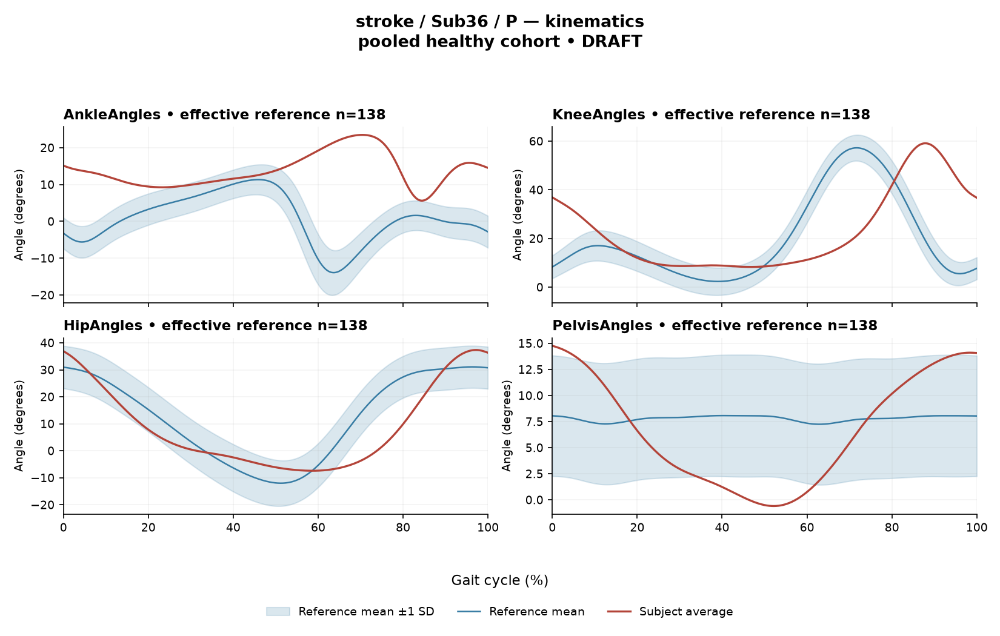

RD1019AB545401771
rater1 / 139 of 150 / Case stroke_Sub36_P / Review row 140
Report: verbatim text
Text file for exact quotations# Gait Report Interpretation — Sub36_P **Interpretation version:** limited-evidence-v3.1-candidate **Scope:** Research interpretation of supplied quantitative summary only. Not a diagnosis, not a treatment recommendation. --- ## 1. Objective Findings **Participant and side.** Sub36_P is recorded in the **stroke** group, and the analyzed limb is the **paretic** side. The released cycle for this limb runs from initial contact of the paretic limb (0%) to the next initial contact of the same limb (100%); these are two successive occurrences of the same event, not one instant. No intermediate event or phase boundary is supplied, so all timing below is expressed as a percentage of the analysis cycle only. **Spatiotemporal values as supplied.** - Gait speed **0.23 m/s**, which falls in the "household ambulator (<0.4 m/s)" speed band. This label denotes a speed band only; it is not a measure of walking independence, safety, or real-world community mobility. - Cadence **64.9 steps/min**. - Step length symmetry index **−35.9%**, computed with the **successive-footfall** definition (each heel at its own initial contact). By the stated sign convention, a negative value indicates the **paretic step is shorter** than the non-paretic step. The alternative instantaneous definition can yield a different number for some subjects; that alternative value is not supplied here. **Reference-comparability limit (applies to every comparison in this report).** The deviation reference actually used for this subject is **138 pooled healthy subjects, 1001 phase points (main_cohort_excel)**. That cohort pools both body sides and all ages and is not matched to this participant. Critically, the healthy reference cohort's self-selected speeds span **0.80–1.79 m/s**, and this subject walks at 0.23 m/s — **no speed-matched healthy reference exists in this dataset for this participant**. Every difference from the reference described below therefore conflates very-slow-walking effects with stroke-related control differences; the two cannot be separated from these data, and no quantity here establishes a disease effect, a severity grade, or a clinical diagnosis. Cohort-wide percentiles quoted below are pooled calibration values, not matched leave-one-out normal limits for this subject. **What is in this input and what is not.** Kinematics are **sagittal plane only**; coronal and transverse channels are not included in this summary. Individual toe-off timing, muscle-specific matched normal timing references, stride-to-stride variability, raw-signal quality checks, and expert plots are **not supplied in this task** — their absence here says nothing about whether they exist in the source release. Age, sex, time post-stroke, stroke clinical scores, and non-paretic-side data are not provided in this input. Seven EMG channels (GAS, RF, VL, BF, ST, TA, ERS) and four sagittal joint/segment channels (ankle, knee, hip, pelvis) are present. --- ## 2. EMG Envelope and Threshold Findings **How these numbers must be read.** All EMG values are properties of an **ensemble-averaged envelope** per muscle, normalized to a shared maximum across available strides for this participant, side, and muscle (the denominator is not shared between sides). Amplitudes are therefore **relative envelope values within each curve** — they are not neural activation, force, or strength, and muscles must not be ranked against one another from them. "Above-threshold interval" means the region where the averaged envelope exceeds **20% of that curve's own peak**, retained only if ≥3% of the cycle. These intervals are detection outputs at the mean-envelope level: they are **not** physiological onset, offset, contraction duration, or inactivity outside the intervals, and they do not establish that the same pattern occurred in every stride. An onset at 0% or an offset at 100% is the analysis-window boundary. | Muscle | Retained interval(s) (% cycle) | Coverage | Boundary continuity | Peak norm. amp. | Max \|z\| (location) | |---|---|---|---|---|---| | GAS | 40–49; 54–97; 99–34 (wraps) | 88% | continuous across cycle boundary | 0.62 | 18.9 above ref., at 78% | | RF | 72–91; 95–65 (wraps) | 88% | continuous across cycle boundary | 0.67 | 3.5 above ref., at 28% | | VL | 96–58 (wraps) | 61% | continuous across cycle boundary | 0.57 | 3.0 below ref., at 94% | | BF | 86–22 (wraps) | 36% | continuous across cycle boundary | 0.53 | 2.3 above ref., at 8% | | ST | 55–72; 85–33 (wraps) | 66% | continuous across cycle boundary | 0.48 | 3.8 above ref., at 61% | | TA | 18–26; 47–52; 80–97; 98–10 (wraps) | 49% | continuous across cycle boundary | 0.64 | 5.0 above ref., at 87% | | ERS | 60–100 | 40% | offset at analysis-window boundary | 0.53 | 6.3 above ref., at 82% | **Coverage and boundary observations.** Six of seven averaged envelopes (GAS, RF, VL, BF, ST, TA) remained above their own 20% threshold **across the cycle-defining initial-contact boundary**, so for those curves the detected region is continuous through 100%/0% rather than starting there. ERS has a single retained interval ending at the analysis-window boundary (100%), which is a window edge, not a detected offset. Retained coverage ranges from 36% (BF) to 88% (GAS and RF) of the cycle. Portions of the cycle outside the retained intervals are simply **not covered by a retained interval** — that is compatible with sub-threshold envelope values or with above-threshold segments too short to satisfy the 3% duration rule, and the supplied evidence does not distinguish these. GAS and TA each show multiple separate retained intervals in addition to a wrapping one; this is a description of the averaged envelope's threshold crossings, not of burst counts in individual strides. No interval here is assigned to stance, swing, loading, push-off, clearance, or weight acceptance, and none can be called early, delayed, or prolonged, because individual toe-off and matched muscle-specific timing references are not supplied. **Max |z| values.** Max |z| is an **extreme-value statistic** — the largest standardized difference across all 1001 phase points — not a single-observation z-score, and its location marks where the standardized difference from the phase-specific reference mean is largest, **not** necessarily the time of peak envelope amplitude or any gait event. "Above/below reference" means relative to the reference mean at that phase point, not relative to a healthy percentile limit. The conventional 2-SD rule does not apply: in this dataset every one of 109 healthy controls exceeds |z| = 2 on at least one muscle, and per-muscle healthy 95th percentiles for this statistic span **3.65 (ERS) to 4.61 (TA)**, higher still under leave-one-out. Against that framing: BF (2.3), VL (3.0), and RF (3.5) fall below the lowest per-muscle 95th percentile quoted; ST (3.8) falls inside the 3.65–4.61 band, and its muscle-specific percentile is not supplied, so it cannot be classified either way; TA (5.0) exceeds its own stated 95th percentile of 4.61; ERS (6.3) exceeds the stated ERS value of 3.65; GAS (18.9) exceeds the entire quoted band by a wide margin. Exceeding a pooled calibration percentile is a descriptive statement about distance from an unmatched reference at one phase point — it does not by itself establish pathology, and at 0.23 m/s the slow-walking contribution cannot be separated out. **Co-contraction indices.** CCI here is the Falconer–Winter index computed on the **full continuous normalized envelopes over the whole cycle** (2 × common area / summed areas). It is a whole-cycle overlap index — not simultaneous activation time, not muscular force, not a phase-specific result — and it can be non-zero even where detected intervals do not overlap, because sub-threshold envelope area contributes. It depends on the normalization and envelope methods used here, so values and thresholds from other studies or algorithms do not transfer. - **TA vs GAS = 0.58**, against the supplied healthy reference median 0.39 (2.5th–97.5th pct 0.24–0.59): above the median and **inside the interval but close to its upper endpoint**. - **RF vs BF = 0.51**, against the supplied median 0.68 (0.48–0.83): below the median and **inside the interval but close to its lower endpoint**. Lying inside these intervals does not establish physiologically normal co-activation or normal muscle function, and proximity to an endpoint does not establish abnormality, stiffness, impaired control, or a diagnosis. --- ## 3. Kinematic and Reference Comparisons All values are **sagittal plane only**, compared against the pooled 138-subject reference described in Section 1. | Channel | Sagittal ROM | Gait Variable Score | |---|---|---| | Ankle | 17.9° | 16.68 | | Knee | 50.8° | 21.86 | | Hip | 44.8° | 8.79 | | Pelvis | 15.4° | 5.35 | **Composite (GPS-like) score: 14.68.** This is the RMS of the per-joint GVS values across the supplied sagittal channels — it is a "GPS-like" composite, not the validated 9-variable GPS. Relative to the supplied composite reference (median 5.1, 95th percentile 10.7), this subject's value is above both. GVS and the composite are **summary magnitudes of difference from the reference across the cycle**: neither localizes the difference to a phase of the cycle, and neither indicates the direction of the waveform difference (e.g., more or less flexion) at any point. Within the sagittal channels supplied, the largest per-joint deviation scores are at the knee (21.86) and ankle (16.68), with hip (8.79) and pelvis (5.35) lower; this ordering describes distance from the unmatched reference, not a mechanism or a lesion location. **ROM values on their own do not establish a clinical restriction** in the absence of an appropriate matched comparison, and no ROM reference values are supplied here. Because no speed-matched healthy reference exists at 0.23 m/s, the elevated composite and per-joint scores cannot be attributed wholly, or in any specified proportion, to stroke pathology; slow-walking effects are inseparably included. These comparisons do not establish a disease effect or support a clinical diagnosis. The same interpretive limits would apply to a control participant compared against this reference. --- ## 4. Questions for Further Clinical Assessment These are open questions raised by the limits of the supplied data. None presupposes that the mechanism or measurement issue named has already been observed, and none implies a treatment. 1. **Event timing.** Are individual toe-off and other gait events available in the source release for this participant? Without them, no retained interval above can be placed in stance or swing, or in any named sub-phase, and no timing can be described as early, delayed, or prolonged. 2. **Stride-level data.** Are the individual stride envelopes and a stride-count/variability summary retrievable? The averaged curve cannot show whether the multiple retained intervals in GAS and TA, or the boundary-crossing continuity in six channels, recur in each stride or reflect averaging across differing stride patterns. 3. **Signal quality.** Would a review of raw EMG traces, electrode placement records, and cross-talk checks for the channels with the largest standardized differences — GAS (18.9), ERS (6.3), TA (5.0) — help establish whether a measurement factor contributes, in addition to or instead of a physiological one? The audit note that 86 of 700 channel combinations lacked valid nonzero paired samples in the checked release suggests a per-channel data-integrity check is worth confirming for this subject. 4. **Speed-appropriate comparison.** Is any slow-speed healthy or clinical comparison set available (or could a speed-controlled healthy protocol be referenced) so that deviations at 0.23 m/s can be interpreted against something other than a 0.80–1.79 m/s cohort? 5. **Contralateral and non-sagittal data.** Are non-paretic-side envelopes and kinematics, and coronal/transverse channels, available? The step length asymmetry (−35.9%, successive-footfall) is a between-limb measure, but only paretic-side channels are supplied here; note also that the EMG normalization denominator is side-specific, so cross-side amplitude comparisons would require explicit handling. 6. **Step-length definition sensitivity.** Does the instantaneous-definition symmetry value for this subject differ materially from the successive-footfall value reported, and which definition is preferred for the intended comparison? 7. **Clinical context.** Are age, sex, time post-stroke, and stroke clinical scores available in the release for this participant? They are not in this input, and any physiological interpretation of the findings above would require them alongside a matched examination.
Coverage rows
| Excel row | ID | Required content | Components |
|---|---|---|---|
| 798 | R127 | Describe walking speed 0.23 m/s and that it is below the stated 0.80 m/s reference floor; no reference at this speed is supplied. | AND: displayed speed and that it lies below the 0.80 m/s reference floor, so no speed-supported healthy reference exists in this dataset. Optional: cadence, speed-band label (not a functional claim). One sentence may also serve the comparability half of G03. |
| 799 | R128 | Identify knee AND ankle as the principal sagittal GVS differences. Exact GVS values are optional; identify the findings as reference-relative sagittal summary differences. | AND: knee AND ankle. Stating which joint is larger is optional; asserting the reverse order is an error. Exact GVS values are optional; no waveform direction, phase or restriction is required. Pelvic ROM 15.4 optional as a measurement only. |
| 800 | R129 | Describe GAS envelope above its phase-specific reference mean at approximately 78% of the analysis cycle (displayed max |z| 18.9). Within each route, muscle identity AND mean-relative direction AND approximate cycle location are required. Exact max-|z| repetition is optional. | Required for each route: muscle identity AND direction relative to the phase-specific reference mean AND approximate cycle location. Optional: exact max |z| value, comparison with the supplied endpoint span (descriptive only). Prohibited: percentile classification, gait phase, physiological onset, severity. |
| 801 | R130 | Describe EITHER ERS envelope above its phase-specific reference mean at approximately 82% of the analysis cycle (displayed max |z| 6.3) OR TA envelope above its phase-specific reference mean at approximately 87% of the analysis cycle (displayed max |z| 5.0). One complete muscle-specific route is sufficient. Within each route, muscle identity AND mean-relative direction AND approximate cycle location are required. Exact max-|z| repetition is optional. | OR: one complete route suffices. Required for each route: muscle identity AND direction relative to the phase-specific reference mean AND approximate cycle location. Optional: exact max |z| value, comparison with the supplied endpoint span (descriptive only). Prohibited: percentile classification, gait phase, physiological onset, severity. |
| 802 | R132 | Describe the supplied successive-footfall step-length index -35.9% and its meaning: the paretic step is shorter. | AND: displayed index and the direction supported by its sign. Optional: formula, definition wording. Acceptable phrasing for small displayed values: "a small difference with the paretic step slightly shorter/longer" (not a cutoff). Prohibited: restating the index as a percentage shortening (E01), severity grades, whole-gait symmetry generalization (E07 issue, not an omission). |
| 803 | G03 | Express a meaningful limitation of reference comparability AND why the comparison cannot establish disease effects or clinical diagnosis; for controls it cannot establish disease or overall normality. One statement may also support a case requirement. | AND: comparability and inference limitations |
Exact system input
Saved fileDraft a research gait-report interpretation for a physical therapist or physiatrist using only the supplied quantitative summary. This is a limited-evidence interpretation task, not diagnosis or treatment selection. Rules: - Describe the participant's actual group and side, available findings, and missing channels accurately. Healthy-group membership does not prove normal physiology; deviations from an empirical reference do not by themselves establish disease. - Treat detected EMG intervals and coverage as properties of an averaged envelope under the stated threshold and duration rule. Do not convert them into physiological onset, offset, duration, continuous contraction, or inactivity outside the intervals. You may describe reported coverage, retained intervals and boundary continuity at the mean-envelope level. Do not infer the same pattern in every individual stride. Say no below-threshold segment only when the supplied evidence establishes that; a rounded coverage value or no retained interval alone does not establish it. - Individual toe-off and matched muscle-specific timing references are not supplied in this task. Use percentages of the analysis cycle. When the input explicitly identifies an initial-contact boundary, you may name that boundary or describe numerical proximity to it. Do not assign stance/swing, loading response, pre-swing, mid-stance or another event to a percentage, or substitute a conventional 60% split. Anatomical muscle actions may be named, but do not map an interval to a gait-phase function such as clearance, push-off or weight acceptance. Do not characterize timing as normal, early, delayed or prolonged without the required evidence. - Respect the supplied normalization method. Relative envelope amplitude is not strength or force, and average curves do not establish stride-to-stride variability. - Report CCI as a whole-cycle overlap index of normalized EMG envelopes. You may compare it with the supplied empirical interval or a supplied median, including proximity to an endpoint. Do not invent an unavailable median. Being within that interval does not establish physiologically normal co-activation or normal muscle function; being outside it does not establish pathological co-activation, stiffness, impaired control or a diagnosis. CCI is not simultaneous activation time, muscular force or a phase-specific result. It depends on normalization and envelope methods; do not transfer values or thresholds from other studies or algorithms. - Describe GVS and GPS-like as summary differences from the stated reference. Neither localizes waveform direction or phase; ROM alone does not establish a clinical restriction without an appropriate comparison. Do not treat pooled calibration percentiles as matched leave-one-out normal limits. - Where using a reference comparison, convey both limited comparability and the inability to establish a disease effect or clinical diagnosis from that comparison. One clear explanation per report is enough; age and speed need not be recited as separate checklist words. A speed inside an overall range does not prove that an appropriate matched reference exists. Apply these limits to controls as well. - The location of maximum |z| is the largest standardized difference from the reference, not necessarily the time of peak envelope amplitude or a gait event. Above/below reference in an EMG row means relative to the phase-specific reference mean at that location, not relative to a healthy percentile limit. - Preserve numerical direction and the displayed precision. Do not invent values, clinical severity grades, statistical significance, or unavailable reference values. Descriptive comparisons with supplied values remain allowed. Near-boundary rounded values do not justify classifying hidden unrounded values. - Clinical follow-up questions may ask whether a mechanism or measurement issue exists; do not presuppose it has already been observed. Do not recommend treatment. If EMG is unavailable, section 2 may simply state that envelope timing, amplitude and CCI cannot be assessed. Reference-only plots do not provide patient EMG. Use exactly these four sections: 1. Objective Findings 2. EMG Envelope and Threshold Findings 3. Kinematic and Reference Comparisons 4. Questions for Further Clinical Assessment
Exact case input
Saved fileCandidate interpretation version: limited-evidence-v3.1-candidate
Draft the four-section report using only this subject's supplied evidence.
Metric definitions (read before interpreting any number below):
- All joint angles and ROM values are SAGITTAL PLANE only. Coronal/transverse data are not included.
- The released EMG curves are ensemble-averaged envelopes. For each participant and recorded muscle, normalization uses a shared maximum across the available strides before averaging; individual strides are not independently rescaled to their own peaks. This pipeline uses the released mean curves without further amplitude normalization. In the checked stroke release, the denominator is participant-, side-, and muscle-specific; it is not shared between sides. The local array audit verified 614 evaluable combinations, not all 700; 86 lacked valid nonzero paired samples. Amplitudes are relative envelope values, not absolute neural activation, force, or strength. Do not rank muscles as stronger or weaker from these amplitudes, or infer stride-to-stride variability from an average curve.
- Above-threshold intervals are the regions where the averaged envelope exceeds 20% of that curve's own peak, minimum retained interval 3% of the cycle (by sample count). An interval written as (X%-Y%) with X > Y wraps across the 100%->0% cycle boundary (envelope remains above threshold across the cycle-defining event). An onset of 0% is the analysis-window boundary, not necessarily a physiological onset. "No interval detected" means no region met the threshold + duration criteria; it does NOT mean the muscle is inactive or non-functional.
- CCI is the Falconer-Winter co-contraction index computed on the full continuous envelopes (2*common area / summed areas), so it can be non-zero even when the DETECTED burst intervals of the pair do not overlap (sub-threshold activity contributes).
- The composite kinematic deviation score is the RMS of the per-joint Gait Variable Scores over the sagittal channels provided ("GPS-like", not the validated 9-variable GPS).
- Step length symmetry index: 200*(paretic - non-paretic)/(paretic + non-paretic), in %. NEGATIVE means the paretic-side step is SHORTER. Two operational step-length definitions exist (successive-footfall: each heel's position at its own initial contact; instantaneous: both heels at the same instant) and give different values for some subjects -- the definition actually used is stated next to the symmetry value.
- "Max |z| deviation" is the LARGEST absolute z-score across all 1001 phase points of the cycle, comparing this curve to the healthy-cohort mean/SD at each phase. This is an extreme-value statistic, NOT a single-observation z-score: in this dataset every one of 109 healthy controls exceeds |z| = 2 on at least one muscle, and per-muscle healthy 95th percentiles for this statistic run 3.65 (ERS) to 4.61 (TA) -- higher still under leave-one-out. Do not label a value abnormal by the conventional 2-SD rule; use the healthy reference range given per muscle where provided.
- Healthy-cohort CCI reference (this dataset): RF-vs-BF median 0.68 (2.5th-97.5th pct 0.48-0.83); TA-vs-GAS median 0.39 (0.24-0.59). Composite score reference: median 5.1, 95th percentile 10.7.
- COHORT BACKGROUND (calibration context, not necessarily the exact reference used for this subject -- the actual reference composition is stated in a dedicated line with the subject data below): the full healthy cohort is 138 subjects for kinematics, effective n = 106-109 per muscle for EMG (29 controls have no usable EMG; completeness varies by age), pooling both body sides and all ages; it is not age- or speed-matched to this subject. A leave-one-out run uses one subject fewer than these counts.
- SPEED SUPPORT LIMIT (applies to most stroke subjects in this dataset): the healthy reference cohort's self-selected walking speeds span 0.80-1.79 m/s. If this subject's gait speed is below 0.80 m/s, NO speed-matched healthy reference exists in this dataset -- 41 of the 50 stroke subjects are below that floor. Deviations from the reference then conflate slow-walking effects with stroke-specific control changes, and the two cannot be separated from these data. Describe deviations from the reference as such; do not attribute them wholly to stroke pathology.
- Additional source fields are outside this input. Age, sex and gait events may be available in the release; time post-stroke, stroke clinical scores and a non-paretic-side designation apply only to the stroke cohort, as applicable. Do not claim every listed field exists for every participant. Distinguish not supplied, not applicable and documented absent recordings.
The released paretic-side cycle runs from initial contact of that limb at 0% to its next initial contact at 100%. The cycle boundary may be called initial contact; the endpoints are successive occurrences, not one instant. No intermediate event or phase boundary is supplied.
Model-visible information boundary: the summary contains mean-curve metrics and algorithm-detected intervals, not individual toe-off, matched normal muscle timing, stride-level variability, raw-signal quality checks, or expert plots. Information not supplied here must not be described as absent from the source dataset. Gait-cycle percentages alone do not identify gait phases.
Subject: Sub36_P (group: stroke, affected side: paretic)
Gait speed: 0.23 m/s (household ambulator (<0.4 m/s)) [The ambulation label denotes a speed band only, not measured walking independence, safety or real-world community mobility.]
Cadence: 64.9 steps/min
Step length symmetry index: -35.9% (step-length definition: successive_footfall)
Composite kinematic deviation score (GPS-like): 14.68
Deviation reference actually used for this subject: 138 healthy subjects (pooled), 1001 phase points, source: main_cohort_excel.
EMG envelope findings:
- GAS: above-threshold interval(s) 40%-49%; 54%-97%; 99%-34% (wraps cycle boundary), 88% of cycle above threshold, above threshold across cycle boundary, peak normalized amplitude 0.62, max |z| vs healthy reference: 18.9 (above reference, at 78% of cycle)
- RF: above-threshold interval(s) 72%-91%; 95%-65% (wraps cycle boundary), 88% of cycle above threshold, above threshold across cycle boundary, peak normalized amplitude 0.67, max |z| vs healthy reference: 3.5 (above reference, at 28% of cycle)
- VL: above-threshold interval(s) 96%-58% (wraps cycle boundary), 61% of cycle above threshold, above threshold across cycle boundary, peak normalized amplitude 0.57, max |z| vs healthy reference: 3.0 (below reference, at 94% of cycle)
- BF: above-threshold interval(s) 86%-22% (wraps cycle boundary), 36% of cycle above threshold, above threshold across cycle boundary, peak normalized amplitude 0.53, max |z| vs healthy reference: 2.3 (above reference, at 8% of cycle)
- ST: above-threshold interval(s) 55%-72%; 85%-33% (wraps cycle boundary), 66% of cycle above threshold, above threshold across cycle boundary, peak normalized amplitude 0.48, max |z| vs healthy reference: 3.8 (above reference, at 61% of cycle)
- TA: above-threshold interval(s) 18%-26%; 47%-52%; 80%-97%; 98%-10% (wraps cycle boundary), 49% of cycle above threshold, above threshold across cycle boundary, peak normalized amplitude 0.64, max |z| vs healthy reference: 5.0 (above reference, at 87% of cycle)
- ERS: above-threshold interval(s) 60%-100%, 40% of cycle above threshold, peak normalized amplitude 0.53, max |z| vs healthy reference: 6.3 (above reference, at 82% of cycle)
Co-contraction indices:
- TA_vs_GAS: CCI = 0.58
- RF_vs_BF: CCI = 0.51
Joint kinematic findings (sagittal plane):
- AnkleAngles: range of motion 17.9 deg, Gait Variable Score 16.68
- KneeAngles: range of motion 50.8 deg, Gait Variable Score 21.86
- HipAngles: range of motion 44.8 deg, Gait Variable Score 8.79
- PelvisAngles: range of motion 15.4 deg, Gait Variable Score 5.35Reference card
Saved file# Reference context: stroke/Sub36_P Mean/SD reference: 138 controls; method pooled; exclusions: []. Effective reference counts: GAS=109, RF=108, VL=109, BF=106, ST=108, TA=107, ERS=106, AnkleAngles=138, KneeAngles=138, HipAngles=138, PelvisAngles=138. The exact system and user input files define what the model receives. The EMG and kinematic plots are supplementary expert evidence, not model inputs. The plotted mean plus/minus one SD is descriptive, not a clinical normal band. Negative lower EMG bands can result from mean minus SD; they do not imply negative recorded EMG. The max-|z| p95 span in the input is pooled calibration context. Complete muscle-specific LOO thresholds are not supplied; an appropriately indeterminate classification is allowed. Controls are excluded from their own mean/SD reference, but cohort-level calibration has prior reference-data reuse. It is not an independent matched clinical limit. GPS-like is a four-channel sagittal composite, not the validated nine-variable GPS. The pooled median/p95 background is not a matched LOO normality boundary. CCI uses continuous normalized envelopes over the whole analysis cycle. An empirical interval comparison does not establish normal muscle function. Threshold intervals and rounded coverage describe the averaged envelope. Rounded 100% coverage and one interval do not prove absence of short below-threshold gaps. Use the group-specific cycle and normalization provenance in the actual input. No individual intermediate gait events or matched normal muscle timing are supplied. Administrative age and published bilateral speed are not added to this input. Expert-visible plots do not justify requiring unseen direction, phase or morphology. For a new-case requirement, cite exact input evidence. Select clinically useful descriptive content without inferring a diagnosis or severity from rank alone.
Expert reference curves
Only text inputs were supplied to the model. Do not require curve-only findings.
EMG

Kinematics
